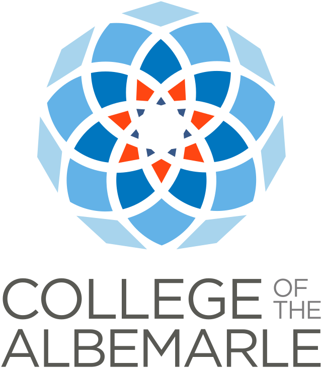

Spencer Shilling
184 Oneal Lane, Aydlett, NC 27916
spencershilling@gmail.com
252-435-5739
Education
| Bachelor of Science, Integrated Science and Technology: Applied Computing (Anticipated May 2023) ABET Accredited James Madison University, Harrisonburg, VA GPA: 3.5; Dean’s List 5 semesters | |
|  | Associate in Science (2019) College of the Albemarle, Elizabeth City, NC; Honor Roll Started taking college classes during sophomore year of high school and graduated with an Associate Degree while simultaneously completing high school program. |
Skills
Excellent math and analytical skills
Microsoft Access and Relational Databases
Outstanding reliability and work ethic
Machine Learning with Scikit Learn
Data Analysis and Visualization
Coding Languages and Software Proficiencies
Python, SQL, R, Excel, Access, and HTML
Related Experience
Capstone Project: Dark Ships
November 2021-Present
As part of my degree in Integrated Science and Technology, several peers and I are working within a group to create a system capable of tracking ships in the ocean that have turned off their AIS tracking systems. We achieved this by utilizing the Yolov7 machine learning model on SARS satellite images to create an algorithm that can detect whether or not an image contains a ship.
Flask Database
Used flask as an intermediary between an html webpage hosted on an Amazon server and an SQL database allowing one to read and write to the database from the webpage. Done as a class project
Relevant Coursework:
Machine Learning, Software Development, Sustainable Manufacturing Systems, Production Systems Lab, Statistics and Data Science, Simulation and Modeling, Environmental Data Science - Remote Sensing, Applied Computing Instrumentation and Measurement Science.
Other Experience
PlayMU Vice President
• In charge of scheduling and organizing events for the club
• Coordinated Events with other colleges
Customer Service/Front Desk | Wiseguys Pies
Grandy, NC | June 2016 – July 2020
• Managed several simultaneous tasks
• Worked in a team environment
• Displayed consistent reliability